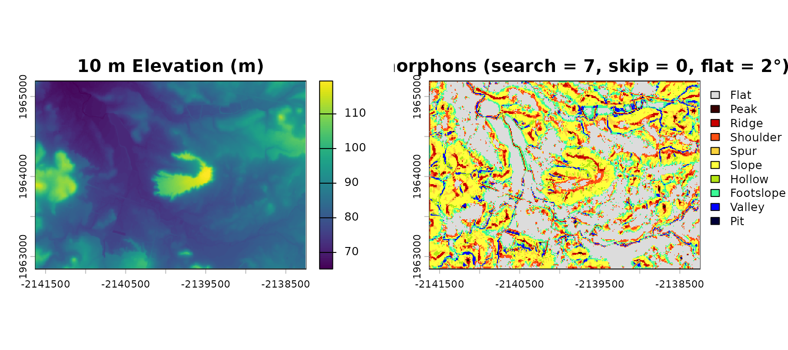
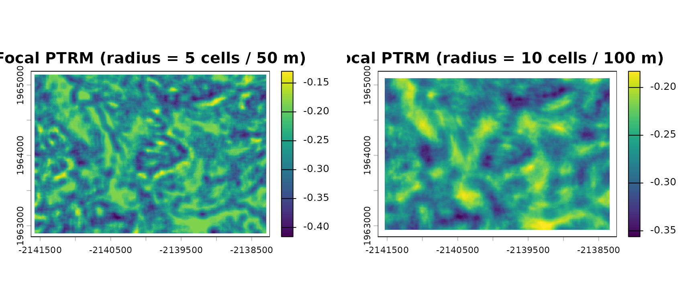
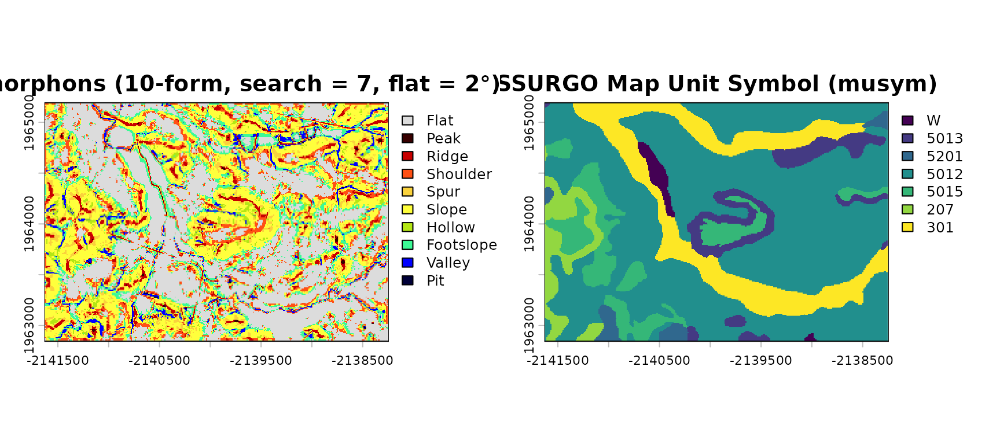
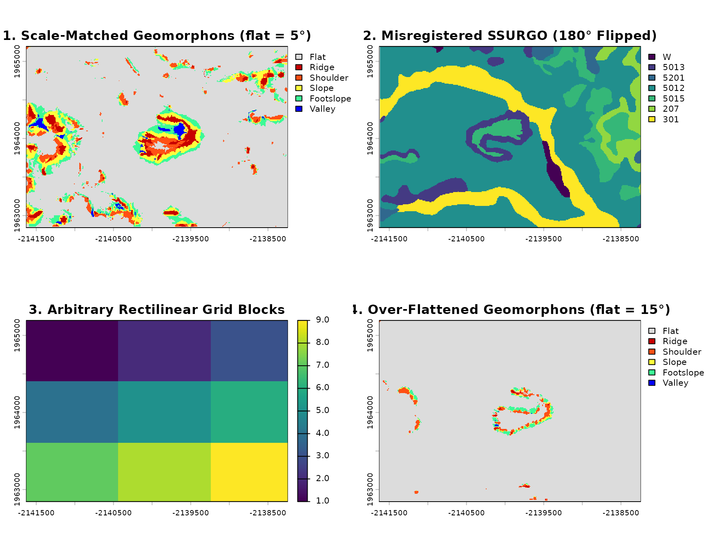

Terrain Realism (PTRM) and Structural Concordance with 'rgeomorphon'
Source:vignettes/ptrm-and-concordance.Rmd
ptrm-and-concordance.Rmd## terra 1.9.50Beyond classifying landforms, rgeomorphon provides tools
to summarize terrain complexity and compare landform patterns against
independent thematic maps such as soil surveys or ecological
classifications:
-
Perceived Terrain Realism Metric (PTRM):
geomorphon_ptrm()andgeomorphon_ptrm_focal()implement the perceptual terrain realism model of Rajasekaran et al. (2022), which weights the relative proportions of geomorphon forms to produce a continuous realism/complexity score—either globally for an entire raster or locally within a circular moving window. -
Structural Concordance:
geomorphon_concordance()quantifies how closely a geomorphon classification aligns with another categorical raster using information-theoretic association (nmi,homogeneity,completeness), legacy directional boundary proximity (edge_offset,edge_concordance), additive symmetric boundary summaries (edge_f1,edge_mhd,edge_chamfer), and an optional 128-shift toroidal spatial-null ensemble (mean_null_nmi,delta_nmi,mean_null_edge_f1,delta_edge_f1).
This vignette demonstrates both workflows using the
scorpion dataset included with
rgeomorphon.
1. The scorpion Dataset
The scorpion dataset contains a 10 m Digital Elevation
Model (aggregated from USGS 3DEP 1 m LiDAR) and co-registered Soil
Survey Geographic Database (SSURGO) soil map unit keys
(mukey) for an old erosional remnant landform that
resembles a scorpion in Calaveras County, California
(EPSG:5070).
For reference, the dataset was prepared using soilDB and
rgeedim (see data-raw/scorpion.R):
library(soilDB)
library(terra)
library(rgeedim)
b <- terra::vect("POLYGON((
-120.9613 38.1600,
-120.9259 38.1600,
-120.9259 38.1743,
-120.9613 38.1743,
-120.9613 38.1600))",
crs = "OGC:CRS84"
) |>
terra::project("EPSG:5070") |>
terra::as.polygons(ext = TRUE)
x <- soilDB::SDA_spatialQuery(
b,
what = "mupolygon",
geomIntersection = TRUE
) |>
terra::project("EPSG:5070")
gd_initialize(project = Sys.getenv("GOOGLE_CLOUD_QUOTA_PROJECT", "rgeedim-demo"))
r <- gd_region(x)
y <- "USGS/3DEP/1m" |>
gd_collection_from_name() |>
gd_search(region = r) |>
gd_composite(resampling = "bilinear") |>
gd_download(region = r, bands = list("elevation"), crs = "EPSG:5070", scale = 1) |>
rast()
y10 <- terra::aggregate(y, 10)
soil <- terra::rasterize(x, y10, "mukey")Let’s load the packaged scorpion dataset and reconstruct
the SpatRaster layers. Assigning
levels(soil) <- scorpion$mapunit attaches the full
SSURGO mapunit and muaggatt attribute table
(keyed by integer mukey in the first column, with
musym as the default active category label):
data("scorpion", package = "rgeomorphon")
# Reconstruct 10 m DEM (meters, EPSG:5070)
dem <- terra::rast(scorpion$dem)
terra::crs(dem) <- attr(scorpion, "crs")
terra::ext(dem) <- attr(scorpion, "extent")
names(dem) <- "Elevation (m)"
# Reconstruct co-registered SSURGO soil map unit raster
soil <- terra::rast(scorpion$mukey)
terra::crs(soil) <- attr(scorpion, "crs")
terra::ext(soil) <- attr(scorpion, "extent")
levels(soil) <- scorpion$mapunit
scorpion$mapunit## mukey musym muname
## 1 2462630 W Water
## 2 2600529 5013 Miltonhills-Amador complex, 15 to 45 percent slopes
## 3 2766836 5201 Pardee-Amador complex, 1 to 15 percent slopes
## 4 2766838 5012 Amador sandy loam, 2 to 15 percent slopes
## 5 2766850 5015 Ospital-Jennylind complex, 2 to 15 percent slopes
## 6 2924880 207 Pentz sandy loam, 15 to 50 percent slopes
## 7 2924908 301 Archerdale-Hicksville association, 0 to 2 percent slopes
## mukind farmlndcl slopegraddcp slopegradwta
## 1 Consociation Not prime farmland 0 0.0
## 2 Complex Not prime farmland 40 35.6
## 3 Consociation Not prime farmland 4 5.4
## 4 Consociation Not prime farmland 7 6.1
## 5 Complex Not prime farmland 2 2.8
## 6 Consociation Not prime farmland 33 29.7
## 7 Association Prime farmland if irrigated 1 1.1
## drclassdcd hydgrpdcd aws0100wta
## 1 <NA> D NA
## 2 Well drained C 7.14
## 3 Well drained D 5.04
## 4 Well drained D 4.66
## 5 Moderately well drained D 3.42
## 6 Well drained D 5.14
## 7 Well drained C 15.65Next, we calculate a baseline 10-form geomorphon classification using a 7-cell (70 m) search radius and a 2-degree flatness threshold:
g <- geomorphons(dem, search = 7, skip = 0, flat_angle_deg = 2)
par(mfrow = c(1, 2))
terra::plot(dem, main = "10 m Elevation (m)")
terra::plot(g, main = "Geomorphons (search = 7, skip = 0, flat = 2°)")
2. Global Perceived Terrain Realism
(geomorphon_ptrm)
geomorphon_ptrm() computes the global Perceived Terrain
Realism Metric for an entire study area:
where is the intercept, is the normalizer, is the proportion of valid cells belonging to landform class , and are the empirical weights from Rajasekaran et al. (2022).
You can compute PTRM either directly from a DEM
(mode = "dem") or from a pre-computed geomorphon
classification (mode = "class"):
# From pre-computed geomorphon classification
ptrm_class <- geomorphon_ptrm(g, mode = "class")
ptrm_class$ptrm_score## [1] -0.2635349
# Directly from the DEM with the same geomorphon parameters
ptrm_dem <- geomorphon_ptrm(
dem,
mode = "dem",
search = 7,
skip = 0,
flat_angle_deg = 2
)
all.equal(ptrm_class$ptrm_score, ptrm_dem$ptrm_score)## [1] TRUEThe returned list includes the normalized ptrm_score,
unnormalized raw_score, total n_cells, and the
observed landform proportions:
round(ptrm_class$proportions, 3)## flat peak ridge shoulder spur slope hollow
## 0.357 0.002 0.042 0.099 0.052 0.265 0.037
## footslope valley depression
## 0.110 0.034 0.001Comparing Form Systems
geomorphon_ptrm() also supports the simplified
geomorphon taxonomies ("forms6", "forms5", and
"forms4"), automatically reducing the 10-form paper weights
over the reachable lookup table cells for each system:
form_systems <- c("forms10", "forms6", "forms5", "forms4")
ptrm_by_system <- vapply(
form_systems,
function(f) {
geomorphon_ptrm(
dem,
mode = "dem",
search = 7,
skip = 0,
flat_angle_deg = 2,
forms = f
)$ptrm_score
},
numeric(1)
)
round(ptrm_by_system, 4)## forms10 forms6 forms5 forms4
## -0.2635 -0.2817 -0.2832 -0.28373. Mapping Local Terrain Realism
(geomorphon_ptrm_focal)
While geomorphon_ptrm() summarizes an entire raster into
a single scalar, geomorphon_ptrm_focal() evaluates the PTRM
equation inside a circular Euclidean moving window of
radius cells around each pixel. This produces a continuous
surface highlighting local transitions between flat basins, uniform
slopes, and dissected ridge-valley networks.
When you already have a geomorphon classification raster
g, pass mode = "class" to compute the focal
window directly on the classes:
p_r5 <- geomorphon_ptrm_focal(g, radius = 5, mode = "class")## Warning: [subst] all 'from' values are missing, returning a copy of 'x'
p_r10 <- geomorphon_ptrm_focal(g, radius = 10, mode = "class")## Warning: [subst] all 'from' values are missing, returning a copy of 'x'
par(mfrow = c(1, 2))
terra::plot(p_r5, main = "Focal PTRM (radius = 5 cells / 50 m)")
terra::plot(p_r10, main = "Focal PTRM (radius = 10 cells / 100 m)")
Smaller window radii capture fine-scale landform boundaries (such as
narrow gullies and ridge crests), whereas larger radii
(radius = 10, or 100 m) smooth over individual hillslope
facets to highlight the prominent scorpion-shaped erosional remnant and
surrounding dissected hillslopes.
4. Structural Concordance with SSURGO Soil Map Units
(geomorphon_concordance)
Soil survey map units are delineated using soil-landscape models
where polygon boundaries often follow topographic breaks (such as
footslopes, shoulders, and floodplains).
geomorphon_concordance() measures how strongly a geomorphon
classification corresponds to a categorical map (soil)
using three complementary perspectives:
-
Information-Theoretic Concordance
(
method = "nmi"): Normalized Mutual Information (nmi, bounded in ) measures statistical dependence between landform classes and soil map units based on their joint contingency table, independent of class labels. Withcat_rast(soil) as the reference classification,homogeneity = I(geo; cat) / H(cat)measures how well the geomorphon classes determine the soil map units, andcompleteness = I(geo; cat) / H(geo)measures how completely the soil map units capture geomorphon information; their harmonic mean equalsnmiwhen both entropies are positive. -
Boundary Alignment
(
method = "boundary"): Detects 8-neighbor edge pixels in both rasters and computes:-
edge_offset: Mean distance (in CRS map units, here meters) from each categorical (soil) boundary cell to the nearest geomorphon boundary cell. -
edge_concordance: Proportion () of categorical boundary cells that fall withinthreshold_cellsof a geomorphon boundary cell. -
edge_f1: Symmetric, threshold-based precision/recall F1 score (). It penalizes unmatched boundaries in either map, unlike the legacy one-way summaries. It is not a kernel score or a one-to-one boundary matching score. -
edge_mhd: Maximum of the two directed mean nearest-boundary distances. Despite the name, this is not the classical maximum Hausdorff distance. -
edge_chamfer: Mean of the two directed mean nearest-boundary distances.
-
-
Toroidal Spatial-Null Contrasts
(
spatial_null = TRUE): Evaluates a deterministic sample of up to 128 non-identity circular translations ofcat_rast(moving category values and theirNAmask together) to report arithmetic null means (mean_null_nmi,mean_null_edge_f1) and observed-minus-null deltas (delta_nmi,delta_edge_f1). Setspatial_null = FALSEto skip the shift ensemble when only observed scores are needed.
The three symmetric summaries detect edges only inside the
intersection of cells that are non-NA in both maps. They
use eight-neighbor connectivity, exclude raster borders, treat mask
holes as neither edges nor distance barriers, and return
NA_real_ if either shared-domain boundary set is empty.
Distances use the raster CRS map units (projected CRS is required). For
rectangular cells, distances use both cell dimensions, while the
threshold distance is threshold_cells * res(geo)[1].
threshold_cells must be a finite, non-negative whole number
when boundary metrics are requested. Geographic CRS inputs produce an
error when boundary metrics are requested because boundary distances
require a planar Cartesian CRS.
The legacy edge counts, edge_offset, and
edge_concordance retain their original per-input masks and
directional definitions. With different NA masks they need not describe
the edge sets used by the new symmetric scores. All three symmetric
fields are included for method = "boundary" and
"both", not for "nmi" alone.
conc <- geomorphon_concordance(g, soil, method = "both", threshold_cells = 2)
data.frame(
nmi = round(conc$nmi, 4),
homogeneity = round(conc$homogeneity, 4),
completeness = round(conc$completeness, 4),
delta_nmi = round(conc$delta_nmi, 4),
edge_offset_m = round(conc$edge_offset, 2),
edge_concordance = round(conc$edge_concordance, 4),
edge_f1 = round(conc$edge_f1, 4),
delta_edge_f1 = round(conc$delta_edge_f1, 4),
edge_mhd_m = round(conc$edge_mhd, 2),
edge_chamfer_m = round(conc$edge_chamfer, 2),
n_edges_geo = conc$n_edges_geo,
n_edges_soil = conc$n_edges_cat,
edge_ratio = round(conc$n_edges_geo / conc$n_edges_cat, 2)
)## nmi homogeneity completeness delta_nmi edge_offset_m edge_concordance
## 1 0.0769 0.093 0.0656 0.0704 3.49 0.9491
## edge_f1 delta_edge_f1 edge_mhd_m edge_chamfer_m n_edges_geo n_edges_soil
## 1 0.475 0.0139 69.75 36.62 58312 9932
## edge_ratio
## 1 5.87Interpreting the Contingency Table
conc$contingency_table cross-tabulates the underlying
integer geomorphon codes (1–10) against the
rasterized integer mukey values. Using
geomorphon_categories() and scorpion$mapunit,
we can label the rows with landform names and columns with map unit
symbols (musym) for easier reading:
ct <- conc$contingency_table
geo_cats <- geomorphon_categories()
rownames(ct) <- geo_cats$form[match(as.integer(rownames(ct)), geo_cats$value)]
colnames(ct) <- scorpion$mapunit$musym[match(as.integer(colnames(ct)), scorpion$mapunit$mukey)]
ct## Category
## Geomorphon W 5013 5201 5012 5015 207 301
## Flat 508 107 135 19832 1509 4 6155
## Peak 4 27 0 93 23 11 33
## Ridge 52 290 152 1514 772 233 323
## Shoulder 15 182 224 5005 1143 139 1139
## Spur 13 814 107 1800 715 537 157
## Slope 57 2819 545 12008 2208 1983 1341
## Hollow 10 433 35 1556 319 375 164
## Footslope 208 41 73 6037 489 52 1812
## Valley 19 102 27 1481 220 130 718
## Pit 0 0 0 34 1 0 28Comparing the contingency table against scorpion$mapunit
reveals clear pedogeomorphic partitioning: - Water
(musym = "W", mukey = 2462630) and
low-gradient alluvial plains (musym = "301",
mukey = 2924908, slopegraddcp = 1%)
concentrate in flat, footslope, and
valley/depression positions. -
Undulating hillslope complexes (musym = "5012",
"5015", "5201",
slopegraddcp = 2–7%) occupy flat,
slope, footslope, and spur
positions. - Steep erosional remnant side slopes and summits
(musym = "5013" and "207",
slopegraddcp = 33–40%) dominate
slope, spur, shoulder, and
ridge landforms, with almost no flat
cells.
par(mfrow = c(1, 2))
terra::plot(g, main = "Geomorphons (10-form, search = 7, flat = 2°)")
terra::plot(soil, main = "SSURGO Map Unit Symbol (musym)")
Interpreting Directional Saturation and Symmetric Boundary Scores
At first glance, edge_concordance = 0.9491 and
edge_offset = 3.49 m in the baseline 10-form run look
nearly perfect. However, look at n_edges_geo
(58,312) versus n_edges_soil
(9,932): out of 78,521 interior cells in the
raster, 74% are geomorphon boundary pixels
(edge_ratio = 5.87).
Because a pixel-level 10-form classification with a low flatness
threshold (flat_angle_deg = 2) transitions between
micro-landforms (ridge
shoulder
spur
slope
footslope
hollow) every few pixels, geomorphon edges saturate the
landscape. The high one-way edge_concordance can therefore
look favorable even when many geomorphon boundaries have no nearby soil
boundary. edge_f1 adds the reverse direction, while
edge_mhd and edge_chamfer summarize distance
in both directions. These are useful diagnostics, not universal
corrections for every threshold, landscape, or fragmentation pattern.
When n_edges_geo >> n_edges_cat:
-
Boundary proximity saturates: Almost any
line drawn across the raster will fall within 2 cells (20 m) of a
geomorphon transition simply by chance. Even symmetric
edge_f1 = 0.4750barely exceeds its toroidal translation baseline (mean_null_edge_f1 = 0.4611,delta_edge_f1 = +0.0139). -
Areal concordance (
nmi) is diluted: Broad SSURGO map units—which were mapped at 1:24,000 scale around generalized slope classes (0–2%, 2–15%, 15–50%)—are split across 10 fine-grained micro-landforms (homogeneity = 0.0930,completeness = 0.0656), keepingnmimodest (0.0769,delta_nmi = +0.0704).
We can see this directly by varying the search radius,
skip distance, flat_angle_deg, and
forms simplification to match the cartographic scale of the
soil survey:
param_grid <- data.frame(
label = c(
"Fine 10-form (search=3, flat=2°)",
"Baseline 10-form (search=7, flat=2°)",
"Broad 10-form (search=15, flat=2°)",
"Scale-matched 6-form (search=15, skip=2, flat=5°)",
"Generalized 6-form (search=15, skip=2, flat=8°)"
),
search = c(3, 7, 15, 15, 15),
skip = c(0, 0, 0, 2, 2),
flat = c(2, 2, 2, 5, 8),
forms = c("forms10", "forms10", "forms10", "forms6", "forms6"),
stringsAsFactors = FALSE
)
scale_results <- do.call(
rbind,
lapply(seq_len(nrow(param_grid)), function(i) {
p <- param_grid[i, ]
g_i <- geomorphons(
dem,
search = p$search,
skip = p$skip,
flat_angle_deg = p$flat,
forms = p$forms
)
cc <- geomorphon_concordance(g_i, soil, threshold_cells = 2)
data.frame(
Configuration = p$label,
nmi = round(cc$nmi, 4),
edge_offset_m = round(cc$edge_offset, 2),
edge_concordance = round(cc$edge_concordance, 4),
edge_f1 = round(cc$edge_f1, 4),
edge_mhd_m = round(cc$edge_mhd, 2),
edge_chamfer_m = round(cc$edge_chamfer, 2),
n_edges_geo = cc$n_edges_geo,
edge_ratio = round(cc$n_edges_geo / cc$n_edges_cat, 2),
stringsAsFactors = FALSE
)
})
)
scale_results## Configuration nmi edge_offset_m
## 1 Fine 10-form (search=3, flat=2°) 0.0795 3.46
## 2 Baseline 10-form (search=7, flat=2°) 0.0769 3.49
## 3 Broad 10-form (search=15, flat=2°) 0.0874 3.20
## 4 Scale-matched 6-form (search=15, skip=2, flat=5°) 0.2107 55.33
## 5 Generalized 6-form (search=15, skip=2, flat=8°) 0.1663 128.75
## edge_concordance edge_f1 edge_mhd_m edge_chamfer_m n_edges_geo edge_ratio
## 1 0.9510 0.4891 68.77 36.12 55647 5.60
## 2 0.9491 0.4750 69.75 36.62 58312 5.87
## 3 0.9521 0.4694 70.54 36.87 59885 6.03
## 4 0.6007 0.5964 55.33 42.78 15646 1.58
## 5 0.3851 0.4917 128.71 74.02 7766 0.78Notice the progression across rows: - Across the three
flat = 2° 10-form runs, edge_ratio stays near
5.6–6.0, so edge_concordance is pinned at
~0.95 while nmi only inches from
0.0795 to 0.0874. - When we generalize to the
6-form taxonomy with
search = 15, skip = 2, flat_angle_deg = 5°, minor hillslope
inflections merge into coherent landform units: n_edges_geo
drops by 73% (to 15,646,
edge_ratio = 1.58) and nmi nearly
triples to 0.2107, while 60.1% of
SSURGO polygon boundaries still fall within 2 cells (20 m)
of a geomorphon boundary.
5. When Concordance Breaks Down: Negative Controls and Poor Parameterization
To understand what geomorphon_concordance() looks like
when agreement is poor or nonexistent, we can compare our scale-matched
classification
(search = 15, skip = 2, flat_angle_deg = 5, forms = "forms6")
against three distinct failure modes on the exact same grid:
-
Spatial Misregistration
(
soil_flipped): Rotating the SSURGO raster 180° (terra::flip(terra::flip(soil, "horizontal"), "vertical")) preserves the exact polygon geometry, class proportions, and soil boundary count (n_edges_cat = 9,932), but displaces the polygons from the underlying scorpion landform. -
Topographically Independent Partitioning
(
grid_blocks): Dividing the landscape into arbitrary rectilinear management blocks that ignore terrain completely. -
Over-Flattened Geomorphon Parameterization
(
flat_angle_deg = 15°): Setting an unrealistically high flatness threshold (15°) collapses all gentle and moderate hillslopes (2–15%slopes) into theflatclass, leaving only the steepest erosional remnant scarps.
# Scale-matched 6-form geomorphon classification
g_matched <- geomorphons(
dem,
search = 15,
skip = 2,
flat_angle_deg = 5,
forms = "forms6"
)
# 1. Spatially misregistered soil map (180-degree rotation)
soil_flipped <- terra::flip(terra::flip(soil, "horizontal"), "vertical")
# 2. Topographically independent rectilinear grid blocks
grid_blocks <- soil
rc <- terra::rowFromCell(grid_blocks, seq_len(terra::ncell(grid_blocks)))
cc <- terra::colFromCell(grid_blocks, seq_len(terra::ncell(grid_blocks)))
terra::values(grid_blocks) <- (rc %/% 80L) * 3L + (cc %/% 120L) + 1L
# 3. Over-flattened geomorphon classification (flat_angle_deg = 15)
g_overflat <- geomorphons(
dem,
search = 15,
skip = 2,
flat_angle_deg = 15,
forms = "forms6"
)
scenarios <- list(
"1. Scale-Matched SSURGO (Reference)" = geomorphon_concordance(g_matched, soil),
"2. Misregistered SSURGO (180° Flipped)" = geomorphon_concordance(g_matched, soil_flipped),
"3. Arbitrary Rectilinear Grid Blocks" = geomorphon_concordance(g_matched, grid_blocks),
"4. Over-Flattened Geomorphons (flat = 15°)" = geomorphon_concordance(g_overflat, soil)
)
comparison_df <- do.call(
rbind,
lapply(names(scenarios), function(nm) {
res <- scenarios[[nm]]
data.frame(
Scenario = nm,
nmi = round(res$nmi, 4),
homogeneity = round(res$homogeneity, 4),
completeness = round(res$completeness, 4),
delta_nmi = round(res$delta_nmi, 4),
edge_offset_m = round(res$edge_offset, 2),
edge_concordance = round(res$edge_concordance, 4),
edge_f1 = round(res$edge_f1, 4),
delta_edge_f1 = round(res$delta_edge_f1, 4),
edge_mhd_m = round(res$edge_mhd, 2),
edge_chamfer_m = round(res$edge_chamfer, 2),
n_edges_geo = res$n_edges_geo,
n_edges_cat = res$n_edges_cat,
stringsAsFactors = FALSE
)
})
)
comparison_df## Scenario nmi homogeneity completeness
## 1 1. Scale-Matched SSURGO (Reference) 0.2107 0.1682 0.2817
## 2 2. Misregistered SSURGO (180° Flipped) 0.0116 0.0093 0.0155
## 3 3. Arbitrary Rectilinear Grid Blocks 0.0575 0.0383 0.1148
## 4 4. Over-Flattened Geomorphons (flat = 15°) 0.0691 0.0382 0.3628
## delta_nmi edge_offset_m edge_concordance edge_f1 delta_edge_f1 edge_mhd_m
## 1 0.1960 55.33 0.6007 0.5964 0.2840 55.33
## 2 -0.0034 80.59 0.3473 0.3324 0.0191 80.51
## 3 0.0297 107.01 0.1930 0.0793 -0.1004 252.66
## 4 0.0609 384.76 0.1646 0.2694 0.1731 384.79
## edge_chamfer_m n_edges_geo n_edges_cat
## 1 42.78 15646 9932
## 2 75.39 15646 9932
## 3 179.83 15646 2264
## 4 199.49 2748 9932
par(mfrow = c(2, 2))
terra::plot(g_matched, main = "1. Scale-Matched Geomorphons (flat = 5°)")
terra::plot(soil_flipped, main = "2. Misregistered SSURGO (180° Flipped)")
terra::plot(grid_blocks, main = "3. Arbitrary Rectilinear Grid Blocks")
terra::plot(g_overflat, main = "4. Over-Flattened Geomorphons (flat = 15°)")
Diagnosing Each Failure Mode
Each failure mode produces a distinct signature across
nmi (homogeneity and
completeness), the directional
edge_offset/edge_concordance, the symmetric
edge_f1/edge_mhd/edge_chamfer,
the spatial-null contrasts (delta_nmi,
delta_edge_f1), and edge counts:
-
Scenario 1 (Scale-Matched SSURGO Reference): Strong
areal association (
nmi = 0.2107,homogeneity = 0.1682,completeness = 0.2817,delta_nmi = +0.1960) and boundary alignment (edge_concordance = 0.6007,edge_offset = 55.33 m) with symmetric scoresedge_f1 = 0.5964(delta_edge_f1 = +0.2840over the translation null mean0.3124),edge_mhd = 55.33 m, andedge_chamfer = 42.78 m; balanced boundary counts (n_edges_geo = 15,646vs.n_edges_cat = 9,932). -
Scenario 2 (Misregistered / Flipped Soil Map): Even
though the soil polygons have the exact same size distribution and
boundary count (
9,932), displacing them from the terrain causesnmito collapse by 18× (from0.2107to0.0116,delta_nmi = -0.0034), increases mean boundary offset from55.33 mto80.59 m, cutsedge_concordancenearly in half (0.3473), and yields symmetric scoresedge_f1 = 0.3324(delta_edge_f1 = +0.0191, nearly indistinguishable from random translation0.3133),edge_mhd = 80.51 m, andedge_chamfer = 75.39 m. -
Scenario 3 (Arbitrary Grid Blocks): Rectilinear
blocks that cut across ridges and valleys yield near-zero areal
concordance (
nmi = 0.0575,delta_nmi = +0.0297), poor boundary alignment (edge_concordance = 0.1930,edge_offset = 107.01 m), and symmetric scoresedge_f1 = 0.0793(delta_edge_f1 = -0.1004, worse than translated blocks),edge_mhd = 252.66 m, andedge_chamfer = 179.83 m. -
Scenario 4 (Over-Flattened Geomorphons,
flat = 15°): Settingflat_angle_deg = 15°erases the boundaries of gentle and moderate hillslopes (n_edges_geoplunges to2,748). Because almost the entire landscape is collapsed intoflat,completenesslooks artificially high (0.3628) whilehomogeneitycollapses (0.0382), pullingnmidown by two-thirds to0.0691(delta_nmi = +0.0609). Meanwhile, SSURGO boundaries in the surrounding plains and undulating hills are left hundreds of meters from the nearest geomorphon edge (edge_offsetspikes to384.76 m,edge_concordancedrops to0.1646); symmetric scores areedge_f1 = 0.2694(delta_edge_f1 = +0.1731),edge_mhd = 384.79 m, andedge_chamfer = 199.49 m.
In practice, interpret metrics together: nmi and its
directional components (homogeneity,
completeness) describe areal association and
class-granularity asymmetry; edge_concordance and
edge_offset describe the legacy categorical-to-geomorphon
direction; edge_f1 captures threshold agreement in both
directions; edge_mhd/edge_chamfer summarize
bidirectional distance; and
delta_nmi/delta_edge_f1 quantify how much
observed structure exceeds circular translation of the categorical map.
Edge counts and their ratio help reveal fragmentation or density
imbalance. No single score establishes thematic validity, and the
metrics do not guarantee immunity to saturation for all patterns.
References
- Jasiewicz, J., & Stepinski, T. (2013). Geomorphons — a pattern recognition approach to classification and mapping of landforms. Geomorphology, 182, 147–156. https://doi.org/10.1016/j.geomorph.2012.11.005
- Rajasekaran, S. D., Kang, H., Čadík, M., Galin, E., Guérin, E., Peytavie, A., Slavík, P., & Mech, R. (2022). PTRM: Perceived Terrain Realism Metric. ACM Transactions on Applied Perception, 19(2), Article 5. https://doi.org/10.1145/3514244